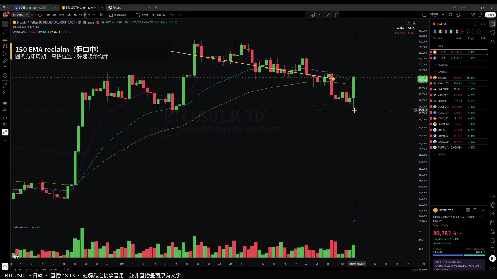
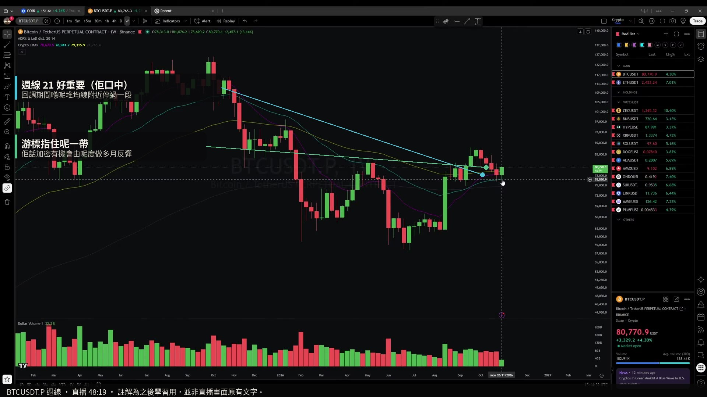
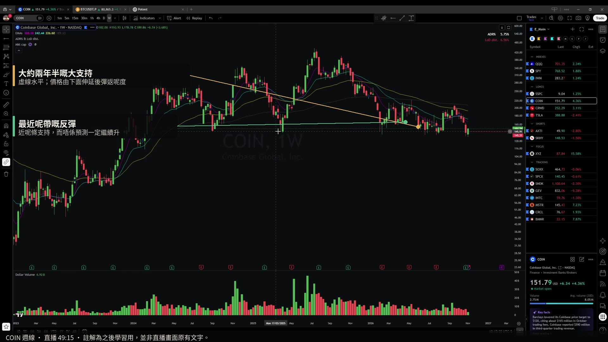
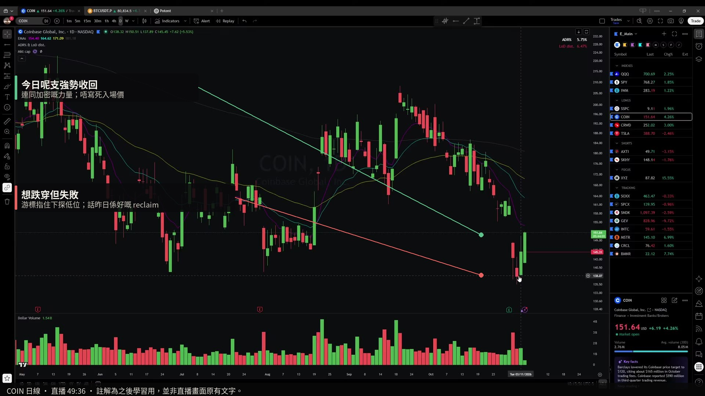
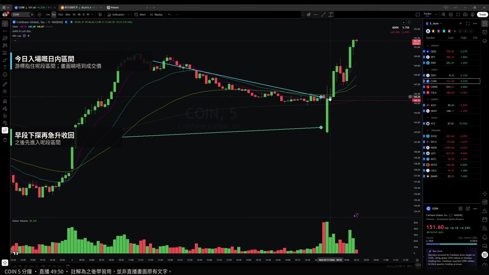

概要
加密先講位置，再講點解入 COIN
48:03 開始答 Coin long。佢先用比特幣解釋：主要係 150 EMA reclaim，同之前講過、回調期間停過一段嘅週線 21；覺得 21 對加密好重要，甚至有機會由呢度做多月反彈。COIN 方面，佢鍾意靠近大約兩年半嘅大支持，而且向下降伸延之後，想跌穿但失敗；話昨日係好嘅 reclaim，今日再加加密本身嘅力量，所以喺呢段日内區間入場。Micro MSTR 或者 BMNR 佢都有想過，但移動太快、太伸延。最後強調：有時形態沒那麼重要，理解市場動態同讀價格行為更加緊要。
圖一
BTC 日線：150 EMA reclaim（佢口中嘅位置）
直播 48:13

原話
And crypto's Coin. I think it's mainly on the 150 EMA reclaim.
至於加密嘅 Coin。我覺得主要係 150 EMA reclaim。
點樣讀
呢句係喺比特幣日線上講。圖例冇印周期，右邊係一堆收緊嘅均線，價格剛彈返呢帶。註解只標位置，唔把黃線或者灰線寫死成 150。
圖二
BTC 週線：21 好重要，回調時停過一段
直播 48:19

原話
The weekly 21 that I mentioned that it stopped for quite a while, like earlier during this pullback. I think the 21 EMA is pretty important for the cryptos, and I think cryptos could get a multi-month rally from here. I think [it] will become one of the hottest theme in the next bull run if we are getting one.
我之前講過嘅週線 21，回調期間喺呢度停過一段時間。我覺得 21 EMA 對加密好重要，而且加密有機會由呢度做一段多月嘅反彈。如果下一輪牛市真係出現，我覺得佢可能成為其中一個最熱嘅主題。
點樣讀
游標指住週線均線堆疊一帶。同樣只按口中「weekly 21」標位置。多月反彈同「hottest theme」係佢當時嘅看法，不是已經發生嘅結果，亦唔係買賣指示。
圖三
COIN 週線：大約兩年半嘅大支持
直播 49:15

原話
And Coin, what I do like is it's near this huge support level for like two and a half years and getting extended to the downside.
而 Coin，我鍾意嘅係佢靠近呢個大約兩年半嘅大支持，而且向下降已經有少少伸延。
點樣讀
虛線水平就係佢講嘅「huge support」。價格由下面伸延之後彈返呢條線附近。呢句係位置觀察，唔等於支持一定守得住，亦唔寫成目標價。
圖四 · 主圖
COIN 日線：想跌穿但失敗，昨日好嘅 reclaim
直播 49:36

原話
Trying to break down but failed. Yesterday we tried and yesterday is a good reclaim. And today together with the actual cryptos strength, I think that's why I enter it at this intraday range.
想跌穿但失敗。昨日試過，而昨日係一個好嘅 reclaim。今日再連同加密本身嘅力量，我覺得所以先至喺呢段日内區間入場。
點樣讀
「enter it at this intraday range」後一句先切到 5 分鐘。日線呢度用嚟解釋 failed breakdown 同 reclaim；唔好把日線最後一支嘅收市價寫成入場價。49:00 附近畫面仲係比特幣，COIN 日線大約 49:06 先出現，本頁用講 failed breakdown 嗰秒（49:36）。
圖五
COIN 5 分鐘：今日入場嘅日内區間
直播 49:50

原話
That's why I enter it at this intraday range. I'm also thinking like taking the micro MSTR or even like BMNR, but they are like moving too fast and a little bit too extended. Sometimes the pattern just doesn't really matter that much. Like I don't think there's a particular pattern right here. But I think understanding the market dynamics and also reading the price actions is pretty important.
所以我喺呢段日内區間入場。我亦有想過做 micro MSTR，甚至 BMNR，但佢哋移動得太快，亦有少少太伸延。有時形態其實沒有咁重要，我唔覺得呢度有一個特定形態。但係理解市場動態，同埋讀價格行為，我覺得好重要。
約 56:16 佢回到加密，補咗一句（當時畫面係 BTC 日線，本頁唔另外出圖，避免同圖一重複）：Let's see whether the cryptos can hold above this 50 EMA and like gradually trailing this rising 9 EMA to the upside. We're not completely out of the woods yet.
譯：睇吓加密可唔可以守喺呢條 50 EMA 上面，然後慢慢沿住呢條上升緊嘅 9 EMA 向上移。我哋都仲未完全脫險。原畫面備份喺 images/coin-crypto/src_btc_daily_5616.jpg。
點樣讀
游標指住 5 分鐘呢段區間。畫面仍然睇唔到成交價，只知佢話入喺呢段區間，唔寫死填單價。
Micro MSTR 同 BMNR 佢只係「有想過」，隨即話太快、太伸延，本頁冇當佢已經做咗呢兩隻，亦冇單獨出圖。YouTube 把後者聽成「BM and Apple」；當時畫面見到 MSTR 再見到 BMNR（BitMine），冇把 Apple 做成圖。呢點有字幕不確定，寫喺附註。
最後兩句係呢科想學嘅重點：形態沒有市場動態同價格行為咁重要。
附註
注意事項
- 圖上中文註解係之後加上嘅學習說明，唔係直播畫面原本已有嘅字。可用「原畫面」對返未加字嘅截圖。
- 畫面睇唔到成交價、倉位大細或者損益，所以本頁唔寫死呢啲數字。
- 圖例多數只有顏色同數值，冇印均線周期。本頁唔會把某條彩線寫死成某個周期；如果佢有講周期，只標「佢口中嘅位置就喺呢附近」。
- 原話來自機器轉寫（faster-whisper large-v3-turbo，並對照 YouTube 自動英文字幕），並非逐字人工校對。標點為閱讀而加。 「stopped」按 YouTube；「hottest theme」按 Whisper（YouTube 為 hottest thing）。
- YouTube 把「BMNR」聽成「BM and Apple」。畫面支持 BMNR；Apple 只列作字幕不確定，唔做圖。
- 本頁只拆 Coin long 同加密呢段（約 48:03–50:31，並附 56:16 補充），冇混入其他系統或者規則。
免責聲明：呢份係教育拆解，方便之後 review 讀圖方法，唔係投資建議，亦唔好當作買賣指示。